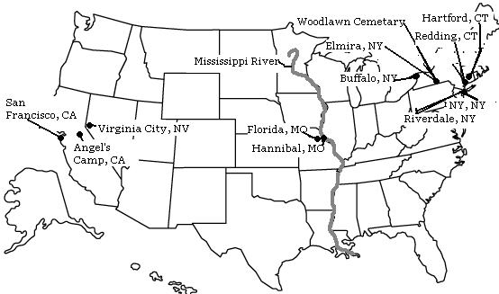

For Further Information:
Here are my recommendations for some interesting Mark Twain websites:
Mark Twain in His Times
TwainQuotes
Calaveras County Fair & Jumping Frog Jubilee
The Mark Twain House and Museum, Hartford, CT
Dollis Hill House Trust
Willard Inter-Continental Washington
Mark Twain for President
Villa Viviani
